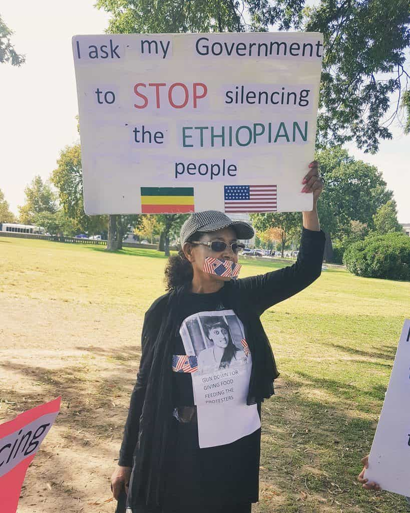
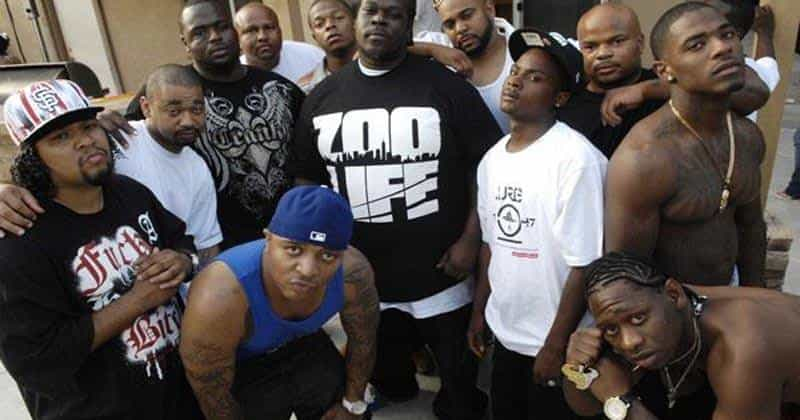
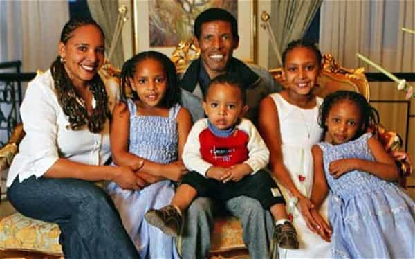

When I read about masculinity and the place of men in our fucked-up modern society, the one issue that comes up over and over again is the disappearance of male-only spaces. You don’t need a professional sociologist to point this out for you. On everything from sports teams, to nerd-type clubs, to the very Boy Scouts of America, the girls want to play too. Fifty years ago, the all-male office was not ubiquitous, but it was by no means uncommon. Now, such a relaxing and efficient male workplace is a lawsuit or social-media shaming waiting to happen, even if the work being done is intense physical labor.
This is not only a product of official hiring policies imposed from the top down by liberal elites. Many men seeking the camaraderie of a guys’ bar night, pickup sports game, or camping trip find themselves harassed and berated by females who want to be included. Often men capitulate to the harassment rather than face the social consequences of appearing “misogynist.” If you live in America, you’ve probably all had this experience. There is a saying in Ethiopia that goes, “the hens cluck louder every year.”
What you may not know, if you’re white and middle-class, is that the disappearance of male spaces is a middle-class white phenomenon. If you’re a black male, you wonder what these social commentators are talking about. We’ve got the sacrosanct basketball court, the underground hip-hop scene, the basement chill session, and of course the rigidly hierarchical neighborhood gang. Women are not equal participants in any of these spaces; if not banned, they are relegated to the role of the mule, the sycophant, or the whore.
The cohesion of the male group and the harsh dog-eat-dog environment ensures that women, who by and large do not have the toughness and competitive edge to survive in these activities, self-select out of them. As a result, men in the black community are generally more aware of how the expectations of masculinity are socially defined for black men.
Of course, there are plenty of downsides to these all-male spaces. For one thing, these spaces lack any semblance of an intellectual culture. Instead of black men getting together to discuss philosophy or politics, their vernacular devolves into a crude half-English called ebonics which is barely sufficient to communicate basic statements and questions. This might be an ineluctable biological or cultural reality, or it might be that gatherings which rely so heavily on physicality might edge out smarter, less physical males as effectively as they do women.
Women are objects to be used by all-male groups, as many tropes from the black community reveal. Hip-hop music routinely refers to women as “bitches” or any number of denigrating names, and while the facts on the ground may be correct (a cheating slut bitch is a cheating slut bitch), the extension of this language to all women is symptomatic of black men’s inability to recognize the humanity of their women. When humans no longer recognize their fellow humans, they become bitter and useless half-men instead of flourishing members of society.
And this is what most black men are: young boys whose fathers knocked up their mothers and left, handing them over to be raised by a violent gang of their peers. When they come of age, they in turn impregnate their own baby mommas, and the cycle continues. Along the way, there are shootings, stabbings, robberies, drug trade and abuse, vandalism, illiteracy, and unemployment. The anger builds from father to son to grandson, and the sins of the fathers are visited on the children to the third and fourth generation.
So if whites are losing their male spaces, and blacks are doubling down on theirs, why isn’t the black community a thriving utopia of patriarchal law and order? Simple. While we haven’t given up our guy time, we have given up our family time. As long as women are not given and do not earn male respect, there will always be a conspicuous absence of healthy families. And if blacks are incapable of forming a family unit, the fundamental building block of a society, we’ll always be incapable of forming a neighborhood, a culture, a civilization. And without these, the male spaces we create are nothing more than animal packs. They contribute nothing constructive to the community or to the black men who join and participate in them.
If you’re reading this as a black man, remember that the family has to be reinforced by the society, and that means elevating the all-male time we spend together by making it dignified and constructive. Respect is a two-way street: no black man is going to respect some street trash ho, but no black woman is going to be any better than that unless the men in her life give her some incentive to do so.
If you’re reading this as a white man, your community has to approach the problem from the other direction. The family unit has a problem in white culture as well. “Respect” has become relativism; it has overflowed to erase the borders between men and women that serve as the foundation of respect between the genders in the first place. Whites need to re-establish male spaces to re-invent masculinity. Only then can the patriarchal family retake its natural role in society.
Read More: Why Women And Gays Should Not Be Allowed In Male-Safe Spaces